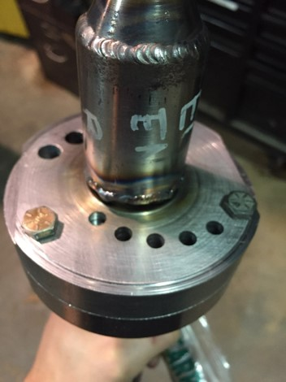
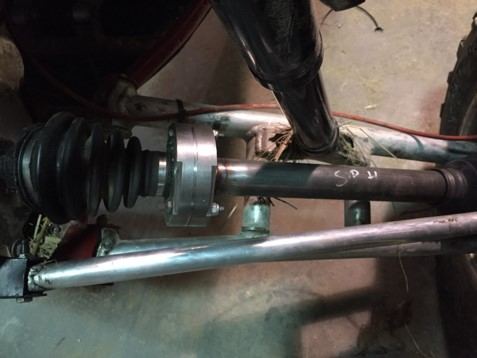
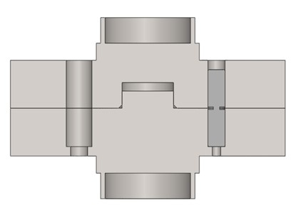

This is a collection of images of my mechanical engineering projects.
| Shear pin hub on driveshaft | Installed on car |
|---|---|
|  |  |
I designed, machined, and installed this assembly which tests the maximum torque through a driveshaft by destruction of a shear pin. Below is a CAD model which shows a cross sectional view of a pin resting in its bore.
